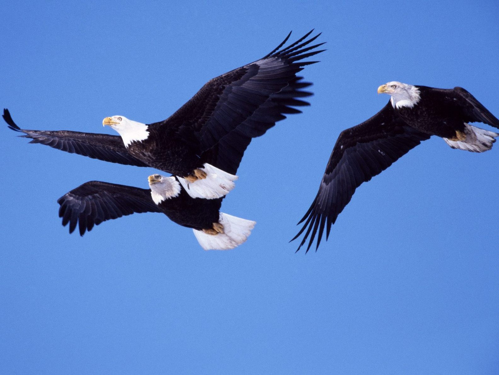
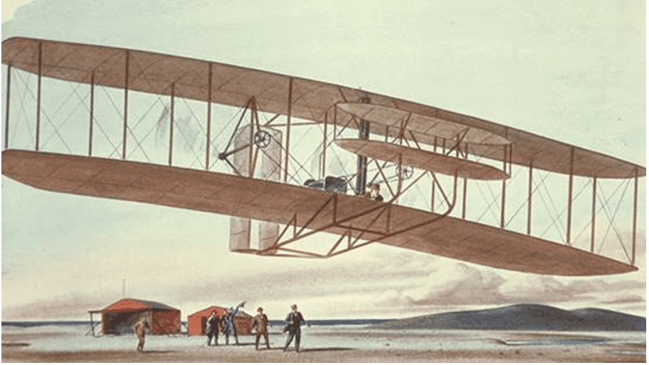
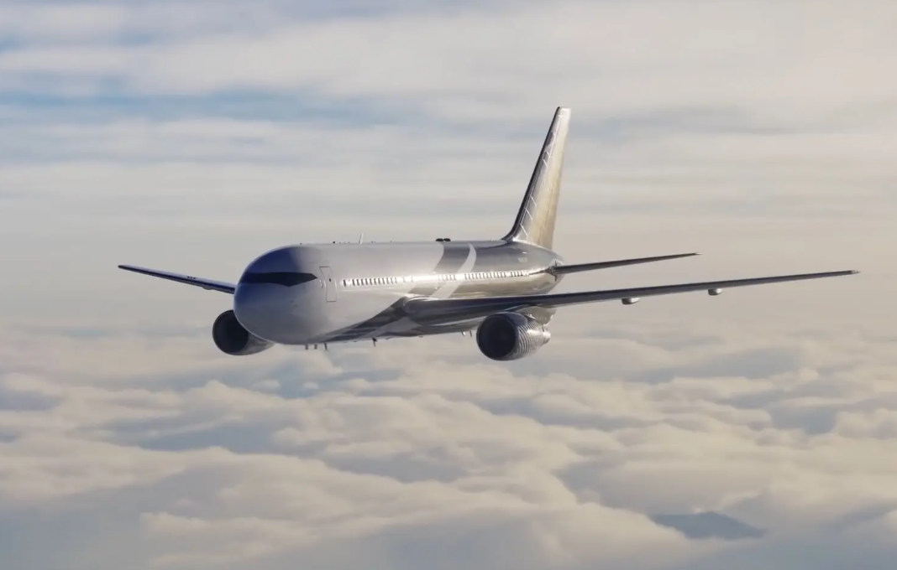

|
人类对飞行的渴望
人类很早就有像鸟类一样在空中飞行的梦想，甚至包括古人用的石头和矛等。
到古希腊人阿尔库塔斯所制造的机械鸽，远至澳大利亚的飞去来器等。
另外人类还通过神话传说来表达自己对如同鸟类一样在天空中自由飞行的渴望
|
 |
|  |
飞机的发明
莱特兄弟是美国著名的发明家，哥哥是威尔伯·莱特,弟弟是奥维尔·莱特。1903年12月17日，
莱特兄弟首次试飞了完全受控、依靠自身动力、机身比空气重、持续滞空不落地的飞机，
也就是世界上第一架飞机“飞行者一号”。莱特兄弟的伟大
发明改变了人类的交通、经济、生产和日常生活，同时也改变了军事史。
|
飞机让世界变得不再遥远
飞机已经成为现代社会中一种无法缺少的交通工具，
目前每年有超过10亿人次的旅客乘飞机旅行。
一些国家还在加紧研制搭载1000名乘客、航程达1千万米以上的大型民航飞机，
在飞机上宾至如归，没有太多的限制。
密如蛛网的航线将世界每个角落紧密地联系在一起，地球变得越来越小了，“地球村”的实现就在不远的将来。
|
 |
|
| |